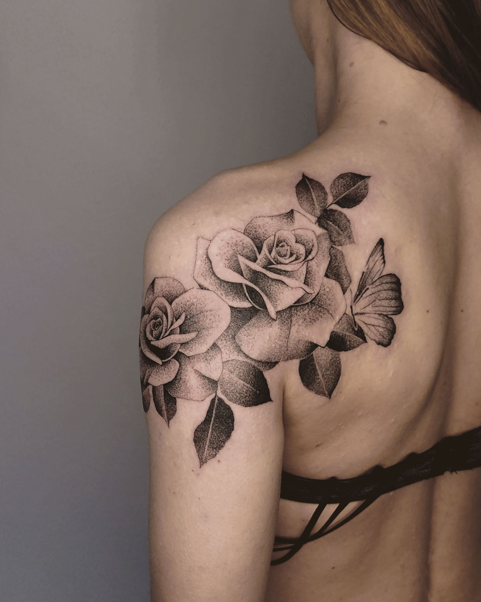
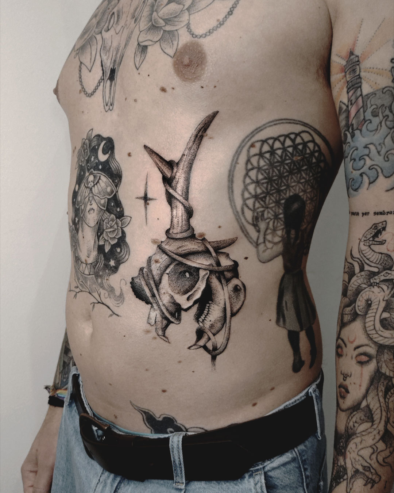
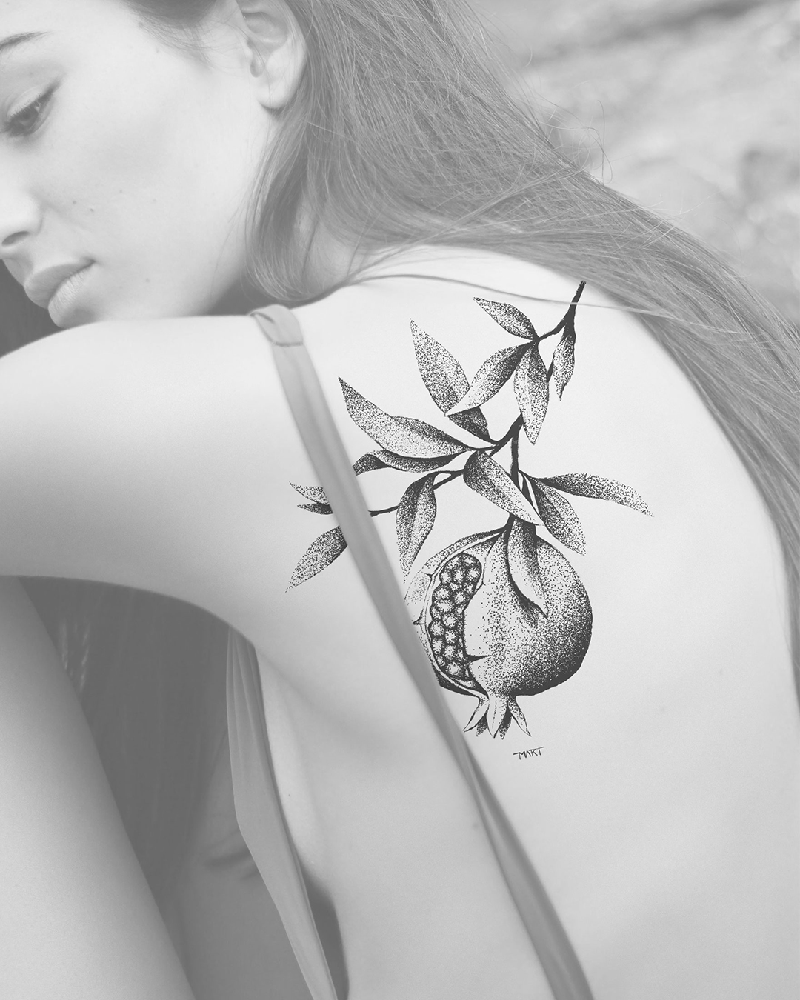
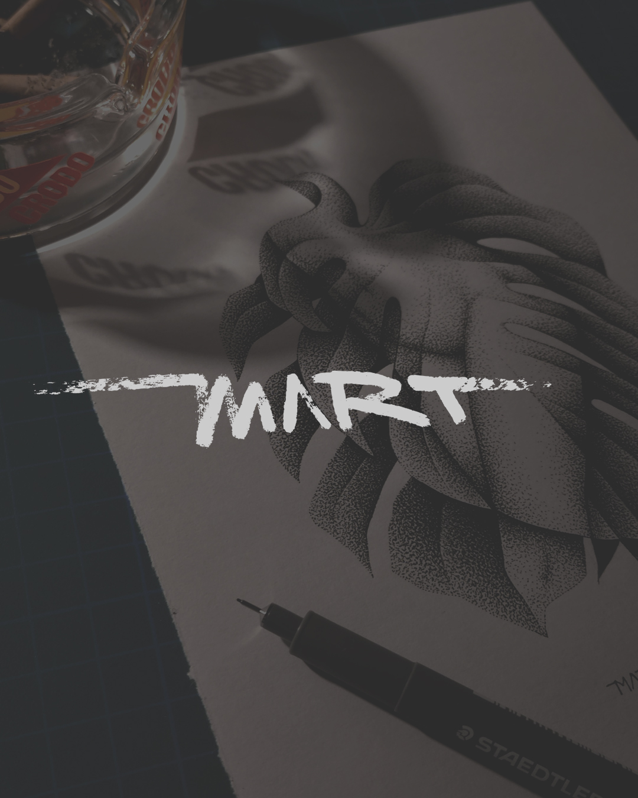
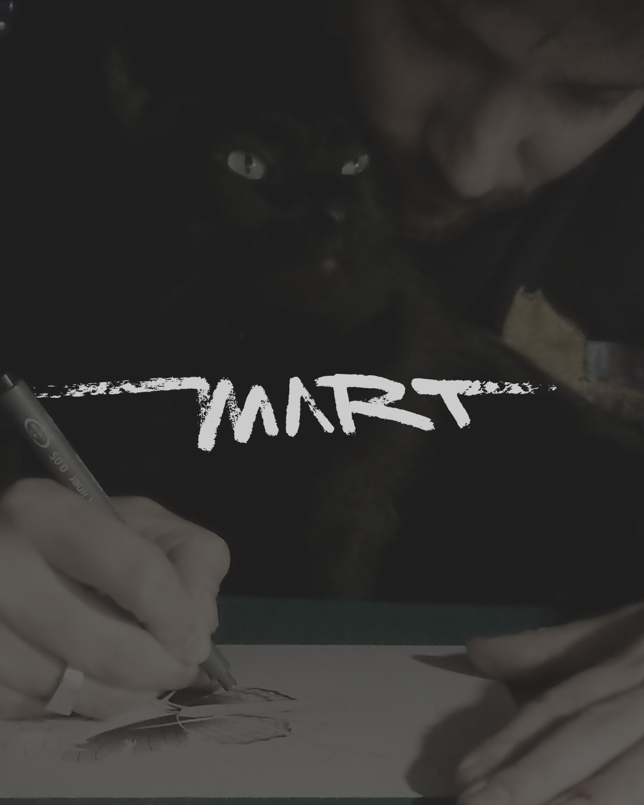

Contattami per prenotare





Contatti

Martino Parizzi
Disegno da sempre: ho iniziato con i graffiti e mi sono formato nella grafica. Nel 2017 la svolta: spinto da un’amica tatuatrice, impugno per la prima volta una macchinetta. È stato un colpo di fulmine che mi ha fatto superare anche la fobia degli aghi (il colmo per un tatuatore).
Dopo un periodo di pratica su frutta e pelle sintetica, nel 2019 ho iniziato ufficialmente la mia carriera. Oggi la mia ricerca si concentra sul dotwork (o puntinismo): porto la precisione del segno grafico sulla pelle, costruendo volumi e texture con estrema pazienza, punto dopo punto.